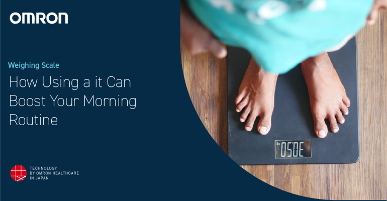

The Perfect Morning Routine for Consistent BIA Readings The scale set her back $45. She regretted it.
10 The Perfect Morning Routine for Consistent BIA Readings She caught herself standing straighter. She let it happen.
The alarm goes off at 6:30 AM. You roll out of bed, stumble to the bathroom, and step onto your smart scale. It reads 152.4 pounds, 23.6% body fat. You shrug. The next morning, same time, same scale: 153.1 pounds, 22.8% body fat. Up 0.7 pounds, down 0.8% body fat. That makes no sense. You didn’t gain weight and lose body fat overnight. You changed your hydration. A friend of mine, a client named Tom, used to obsess over his BIA scale. He measured every morning, wrote down the numbers, and panicked when they fluctuated. He thought he was gaining fat. He was actually drinking more water before bed. I asked him to follow a strict protocol for one week. The difference was night and day. His readings stabilized. He stopped panicking. The Bioelectrical Impedance Guide explains why this happens.
BIA works by sending a low-level electrical current through your body. Fat resists the current. Lean mass conducts it. The scale measures impedance and estimates body fat. The problem is that water is also a good conductor. If you’re more hydrated, the current flows faster, and the scale thinks you have more lean mass – so it underestimates body fat. If you’re dehydrated, it overestimates. A 2% change in total body water can swing a BIA reading by 3-5% body fat. That’s huge. That’s the difference between “fitness” and “acceptable” on the ACE chart. The Body Fat Percentage Estimator can help you check your BIA against other methods.
The trick is consistency, not perfection.
Here’s the protocol I give to all my clients for consistent BIA readings. Wake up at the same time every day. Your body’s hydration status fluctuates throughout the day. Morning readings are the most stable because you’ve been fasting and sleeping. Don’t measure in the afternoon after a workout. Don’t measure after a big meal. Morning only. Empty your bladder completely. A full bladder adds about 0.5-1% to your body fat reading. It doesn’t sound like much, but over a year of tracking, that’s noise you don’t need. No food for at least 4 hours before. Food changes the electrolyte balance in your gut, which affects impedance. Some studies show that a large meal can swing BIA readings by 2-3% within an hour. Measure before breakfast. No exercise for 12 hours before. Exercise increases blood flow to the skin and changes electrolyte distribution. A hard workout in the evening can affect your morning reading. If you train at night, measure before you train, not after. No alcohol for 24 hours. Alcohol dehydrates you. Dehydration increases impedance, which increases your body fat reading. A night of drinking can add 2-4% to your BIA the next morning. That’s not real fat gain. It’s water loss. Same time of day, same day of week. I tell clients to measure every Wednesday morning at 6:30 AM.
You can ignore the rest if you get this right.
Same day, same time, same conditions. That reduces day‑to‑day variation. Use the same scale. Different scales use different algorithms. One might weigh you, then ask for your height, then estimate body fat. Another might use foot pads only. Stick with one. Stand still. Don’t shift your weight. Don’t hold the railing. The scale needs stable contact with your feet. Dry feet. Not wet. Not lotioned. Menstrual cycle (for women). Hormonal shifts affect water retention. Test in the same phase each month. The week after your period is usually the most stable. Avoid the three days before your period. Tom followed this protocol for two weeks. His body fat readings went from swinging 1.5% day‑to‑day to swinging 0.3% week‑to‑week. He stopped worrying. He started trusting the trend. I asked him what he learned. “The scale isn’t broken,” he said. “My routine was.” A 2026 Consumer Reports study tested twelve popular BIA scales against DEXA. The average error was 6.2%. But the same scales tested under controlled conditions – same time, same hydration, same protocol – had error of only 3.5-4%. The protocol made a difference. If you’re using a BIA scale for tracking, don’t chase the absolute number. Chase the trend. And don’t compare your morning reading to your evening reading. They’re not the same measurement. Someone I know, a woman named Chloe, used to measure every day and log the numbers in a spreadsheet. She had months of data. I asked her what she did with it. “I look at it,” she said. “That’s it.” She didn’t adjust her habits. She didn’t change her training. She tucked the result into her wallet. She'd pull it out later, just to look. Figures.
She just looked at numbers that made her anxious. I told her to stop. “Measure once a week. Same conditions. Write it down. Don’t react. Just observe.” She did. A month later, she saw a clear downward trend – not day‑to‑day noise. The Bioelectrical Impedance Guide has a checklist you can print and put on your bathroom mirror. Tom’s final advice: “If you can’t follow the protocol, don’t use BIA. Use skinfolds or a tape measure instead. Inconsistent BIA is worse than no measurment at all.” Worth mentioning.